メニュー
トップ >>
ダンジョン >>
精鋭討伐 ハシュラム
冒険家協会バーから入場し、討伐すると アルカナ補助武器 や 賢者の外装アーマーの欠片 を獲得できます。
補助武器のオプションは アケインコード を使って何度でも振り直すことができ、長期的な強化先のひとつです。
2024年4月18日 (ver 0.0810) 実装
入場方法
クリア報酬
アルカナ補助武器（職業別18種）
賢者の外装アーマーの欠片 / アケインコード
関連ページ
入場画面 (NPC「メルカリル」)。難易度・週間クリア回数・獲得アイテム等が確認できる。
※ 難易度が高いほどコア報酬が「アルカナ補助武器の箱」になる確率が増加します。
着用要求レベルは 900。獲得時のオプションは固定枠から選ばれ、数値部分のみランダムです。
＜共通仕様＞
アケインコードの入手には 賢者の外装アーマーの欠片 が必要です。
＜目安＞
週上限の1000個（外装欠片）まで集められた場合、アケインコード 50個分 ＝ オプション変換 50回分 の素材になります。
精鋭討伐の確定報酬と狩場ドロップの両方を活用すると、振り直し回数を稼ぎやすくなります。
出典: 公式お知らせ「4月18日(木)アップデート内容のご案内」(2024年4月18日)
精鋭討伐 ハシュラム
900レベル以上の5転生キャラクター専用の精鋭討伐ボス。冒険家協会バーから入場し、討伐すると アルカナ補助武器 や 賢者の外装アーマーの欠片 を獲得できます。
補助武器のオプションは アケインコード を使って何度でも振り直すことができ、長期的な強化先のひとつです。
2024年4月18日 (ver 0.0810) 実装
入場方法
クリア報酬
アルカナ補助武器（職業別18種）
賢者の外装アーマーの欠片 / アケインコード
関連ページ
入場方法
| 入場条件 |
5転生以上 / 900レベル以上 メインクエスト1（新しいREDSTONEの完成）クリア済み さらに先行クエスト「地下界の訪問者」を完了する必要あり ※「地下界の訪問者」は冒険家協会バーNPC「メルカリル」から受注 |
|---|---|
| 入場場所 |
冒険家協会バー NPC「メルカリル」 ガレリオン野営地 NPC「妖精石交感師」 原始要塞セルーテ NPC「バンダラーカ」 ※ ガイドレベル901区間の「ハシュラム精鋭討伐」からも移動可 |
| 入場頻度 | 週1回（毎週月曜00:00リセット） ソロ／パーティーいずれも可 ※ パーティープレイ時は全員が同じフィールド内にいる必要あり |
| 難易度 | 初級 / 中級 ※ 上級・超級は今後追加予定 |
| 復活制限 | キャラクターの復活回数は 8回まで ※ 一部の復活アイテム・蘇生スキルは適用されません |
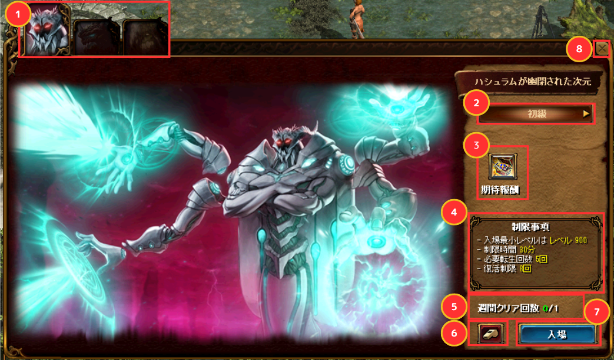
入場画面 (NPC「メルカリル」)。難易度・週間クリア回数・獲得アイテム等が確認できる。
クリア報酬
クリア時の報酬は 確定枠 と コア報酬枠（確率） の2系統に分かれています。| 確定枠 | ||
|---|---|---|
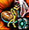 |
賢者の外装アーマーの欠片が入った袋 | 100%獲得。使用すると 賢者の外装アーマーの欠片 35〜37個 を獲得 |
| — | 経験値 | 難易度が高いほど獲得経験値が増加 |
| — | ひび割れた邪念 | 限界突破5 クエストの素材 |
| コア報酬（いずれか1つを確率獲得） | ||
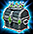 |
アルカナ補助武器の箱 | 使用するとハシュラム専用の補助武器を1つ獲得（職業別18種） |
| — | 775ULT 等級アイテム | — |
| — | 1100DX 等級アイテム | — |
※ 難易度が高いほどコア報酬が「アルカナ補助武器の箱」になる確率が増加します。
アルカナ補助武器（職業別18種）
ハシュラムを討伐すると、コア報酬の アルカナ補助武器の箱 から職業に対応した補助武器を1つ獲得できます。着用要求レベルは 900。獲得時のオプションは固定枠から選ばれ、数値部分のみランダムです。
| アイコン | 名称 | 着用可能職業 |
|---|---|---|
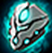 |
ウォールオブアルカナ | 剣士 / ビショップ |
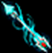 |
アローオブアルカナ | アーチャー |
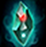 |
クリスタラインオブアルカナ | マスケッティア |
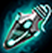 |
フラスコオブアルカナ | プリンセス |
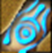 |
ヘナオブアルカナ | ランサー |
| ブローチオブアルカナ | ウィザード / 光奏師 / 獣人 | |
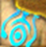 |
クレストオブアルカナ | ビーストテイマー / サマナー |
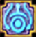 |
クロスオブアルカナ | 追放天使 / ネクロマンサー / 悪魔 / 黒魔術師 |
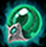 |
カタリストオブアルカナ | アルケミスト |
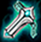 |
シスオブアルカナ | 戦士 |
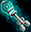 |
キーオブアルカナ | シーフ |
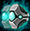 |
ガードオブアルカナ | 武道家 |
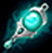 |
シャードオブアルカナ | ウルフマン |
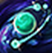 |
スターダストオブアルカナ | リトルウィッチ |
| ソウルオブアルカナ | 霊術師 | |
| ペイントオブアルカナ | 闘士 | |
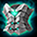 |
コサージュオブアルカナ | メイド |
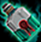 |
ラムオブアルカナ | キャプテン |
＜共通仕様＞
- 登場するオプション枠は固定。数値はランダム。
- 1アイテムにつき登場するオプションは 1つのみ。
- 製錬・異次元・異界強化・図案書・巨商の策略・鏡の魔法書・錬成・分解・ミニペット餌 は使用不可。
賢者の外装アーマーの欠片 / アケインコード
アルカナ補助武器のオプションが気に入らない場合、アケインコード を使ってオプションを振り直すことができます。アケインコードの入手には 賢者の外装アーマーの欠片 が必要です。
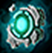 |
賢者の外装アーマーの欠片 |
900〜1249レベル帯のモンスターから一定確率で 40個ずつ ドロップ ※ ヤティカヌ / ウポスマイヤー / ウモスクェグマイヤーフィールドは対象外 ※ 週間アカウント獲得制限：1000個（毎週月曜00:00リセット） 精鋭討伐クリア時の確定枠でも袋から35〜37個獲得可能。 |
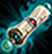 |
アケインコード （一般補助武器用） |
精鋭討伐NPCで 賢者の外装アーマーの欠片 20個 → アケインコード1個 と交換。 オプション変換時に 1000万Gold + アケインコード1個 を消費して1つのオプションを変換。 ※ ギルド戦では使用不可 |
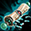 |
アケインコード （ペット、召喚獣） |
ペット・召喚獣専用オプションへの変換用。一般用とは別物。 ※ ギルド戦では使用不可 |
＜目安＞
週上限の1000個（外装欠片）まで集められた場合、アケインコード 50個分 ＝ オプション変換 50回分 の素材になります。
精鋭討伐の確定報酬と狩場ドロップの両方を活用すると、振り直し回数を稼ぎやすくなります。
関連ページ
- 精鋭討伐 タビアクート（1250レベル以上）
- 精鋭討伐 スザルアンキール（1500レベル以上）
- 精鋭討伐 ヴェノムベッセル（2000レベル以上）
- 限界突破クエスト（ひび割れた邪念の用途）
出典: 公式お知らせ「4月18日(木)アップデート内容のご案内」(2024年4月18日)